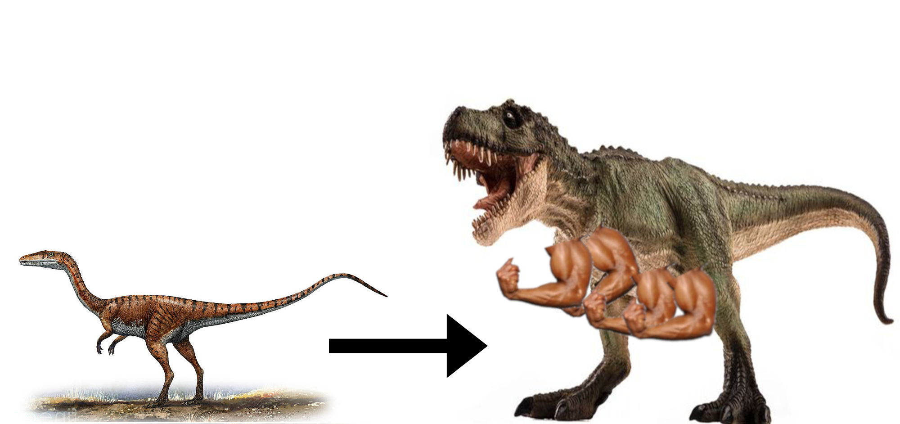
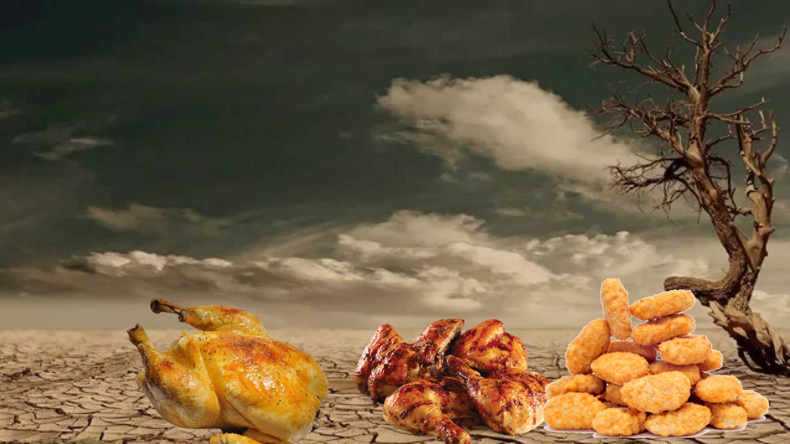

Paleoecology

As the apex predators of their respective food chains, dinosaurs could prey on essentially anything. The most likely fed like modern chickens, dipping their beaks down rapidly to pick off
unlucky prey. They essentially occupied all the upper trophic levels of their environment, regardless of biome. In times of scarce prey, dinosaurs may have resorted to plant material, such as
200-ton sesame seeds. It is possible that their undefended young/eggs may have been prey to other animals, such as the scrambled-egg-saurus. This ensured that only the most powerful of dinosaurs
would live to pass their young onto the next generation. As a result, while early primitive dinosaurs were short and skinny, later dinosaurs were absolutely ripped.
Eventual Extinction

Some 65 million years ago, a massive solar flare cooked the Earth in a catastrophic mass extinction called the K-FC mass extinction. Most of all life was killed, including all the dinosaurs, who were quickly
cooked into delicious but very dead corpses. It is their remains that inspired future human culinary dishes, such as grilled chicken sandwiches or chicken nuggets.